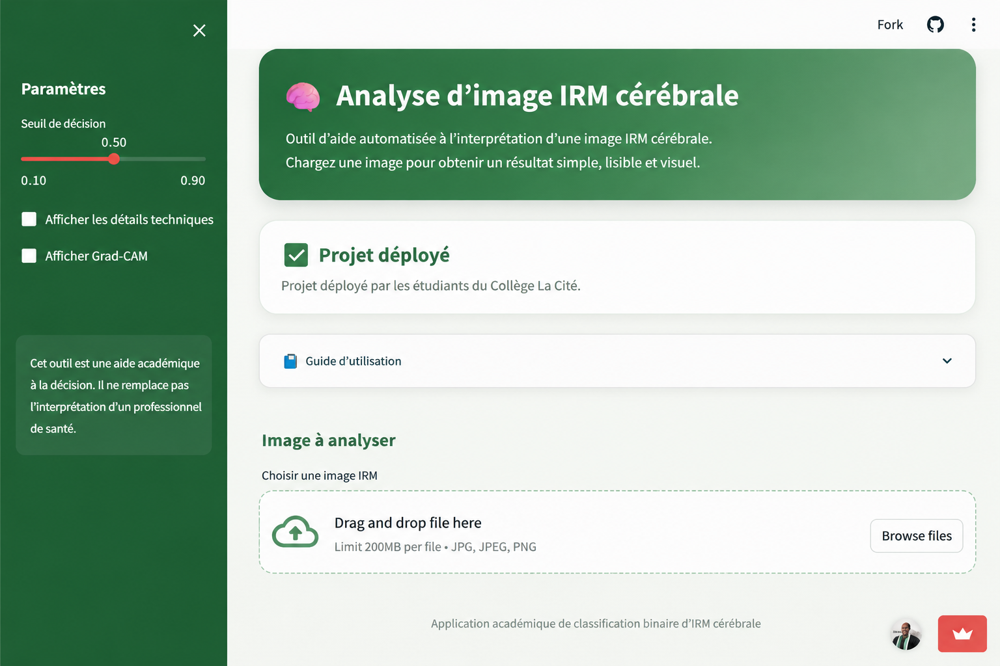
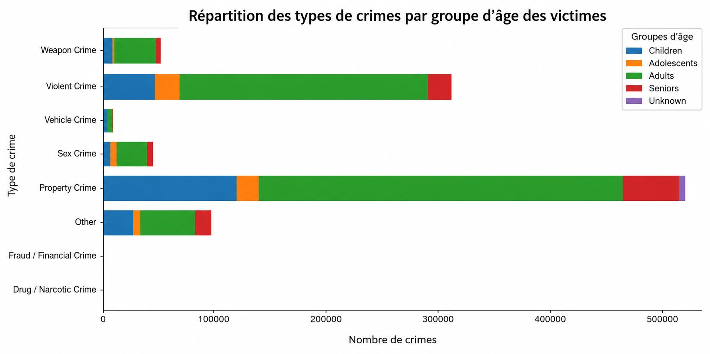
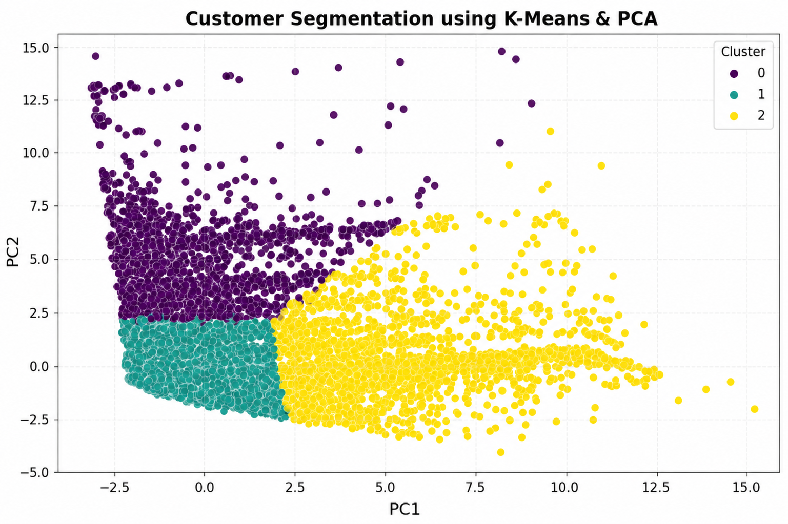

Technical Skills
I use data analysis, business intelligence, database technologies,
and machine learning tools to transform raw data into clear and
actionable insights.
Data Analysis
- Python
- Pandas and NumPy
- Exploratory Data Analysis
- Data Cleaning and Validation
- Microsoft Excel
Business Intelligence
- Power BI
- Power Query
- DAX
- Tableau
- Dashboard Development
Databases and ETL
- SQL
- SQL Server
- MySQL
- ETL Processes
- Data Integration
Machine Learning
- Scikit-learn
- TensorFlow and Keras
- Classification Models
- Predictive Modeling
- Model Evaluation
- Streamlit Deployment
Featured Projects

Brain MRI Tumor Detection
Developed a deep learning application capable of detecting brain
tumors from MRI scans using a Convolutional Neural Network (CNN).
Built an interactive Streamlit interface for real-time prediction.
Technologies
Python • TensorFlow • CNN • Streamlit • OpenCV

Los Angeles Crime Analytics
Analyzed crime records from Los Angeles using exploratory data
analysis, feature engineering, and machine learning to uncover
crime patterns and support public safety insights.
Technologies
Python • Pandas • XGBoost • Matplotlib • Scikit-learn

Credit Card Customer Segmentation
Performed exploratory data analysis and customer segmentation
using PCA and K-Means clustering to identify financial behavior
patterns and support credit risk assessment.
Technologies
Python • Pandas • PCA • K-Means • Scikit-learn • Matplotlib
About Me
I am an Applied Data Science graduate based in Ottawa, Ontario,
with hands-on experience in data analysis, business intelligence,
machine learning, and data visualization.
My background includes working with real-world datasets in areas
such as healthcare, transportation, finance, public safety, and
business operations. I enjoy transforming complex and unstructured
data into clear insights that support better decision-making.
I have experience with Python, SQL, Power BI, Tableau, Excel,
SQL Server, MySQL, Scikit-learn, TensorFlow, and Streamlit.
My work includes data cleaning, exploratory analysis, ETL,
dashboard development, predictive modeling, and analytical reporting.
What I Bring
- Strong analytical and problem-solving skills
- Experience working with structured and unstructured data
- Ability to build dashboards and analytical reports
- Experience presenting insights to technical and non-technical audiences
- Bilingual communication skills in French and English
- Strong collaboration and organizational skills
Career Objective
I am seeking opportunities as a Data Analyst, Business Intelligence
Analyst, Reporting Analyst, or Junior Business Analyst where I can
leverage Python, SQL, Power BI, and machine learning to transform data
into actionable insights and support data-driven decision-making.
Let's Connect
I am open to opportunities in data analysis, business intelligence,
reporting, and junior business analysis.
Location:
Ottawa, Ontario, Canada